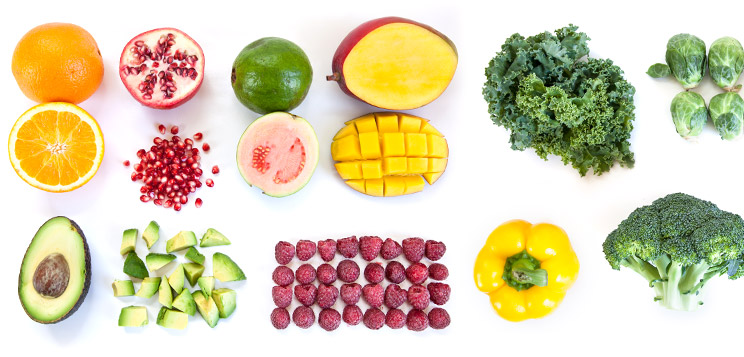
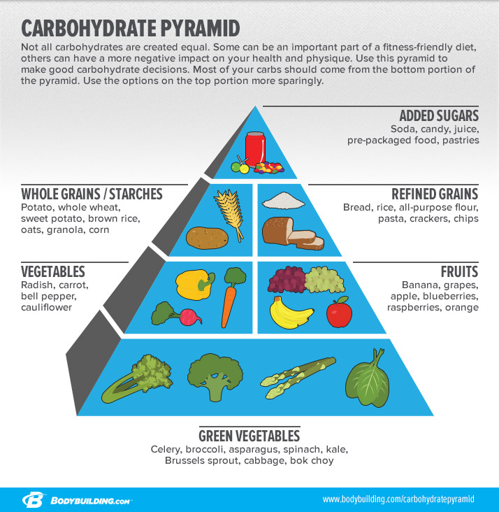

THE MOST NUTRITIOUS FRUITS AND VEGETABLES

Fruits and vegetables are essential to a healthy body. We've created a list of the most nutritious options so you can choose which ones best fit your nutrition plan!
Losing fat and gaining muscle often means that the food you eat is based upon what macronutrient ratio is best for your goal. Because we're so focused on how much carbs, fat, and protein we're getting in each meal, we often forget that micronutrients are also an essential part of a healthy body and a great physique.
Micronutrients are essential vitamins and minerals that your body doesn't make; they need to come from your diet. Although your body doesn't need much of them, they are necessary for your body's systems to function optimally. It's very possible to become deficient in certain micronutrients, which can cause all kinds of health issues. For example, too little potassium can cause muscle cramping, weakness, and even heart arrhythmias.
It's true that taking a multivitamin can help you get those vitamins and minerals your body needs to operate at its best, but your body actually absorbs micronutrients much better from food than from a pill. So, it's important to fill your plate with nutrient-dense fruits and veggies instead of hoping your multivitamin will take care of any holes in your nutrition.
Below are some of the most nutrient-dense fruits and veggies. Stock up on them so you can provide your body everything it needs to work at its best!
FRUIT : Mango

Serving size: 1 mango
Calories 201
Fat 0.8 g
Carbs 32.3 g
Protein 1.7 g
Mango can be slightly harder to find and even more challenging to eat than some fruits, but it's a great addition to your nutrition plan. One mango provides 5 grams of fiber, as well as potassium, phosphorus, magnesium, calcium, and huge doses of vitamins A and C.
It's slightly more caloric than most fruits, so be aware of how much you're eating.
POMEGRANATE

Serving size: 1/2 cup pomegranate seeds
Calories 72
Fat 1 g
Carbs 16 g
Protein 1.4 g
Pomegranate has received some special attention in the last few years—and for good reason! Pomegranate has a unique, delicious flavor and is chock-full of nutrients. One half cup of pomegranate seeds provides lots of potassium, magnesium, fiber, and vitamins B-1, B-2, B-6, C, E, and K.
Pomegranates are a little bit difficult to eat, but they're well worth the effort. The taste and nutritional benefits outweigh a little effort on your part!
